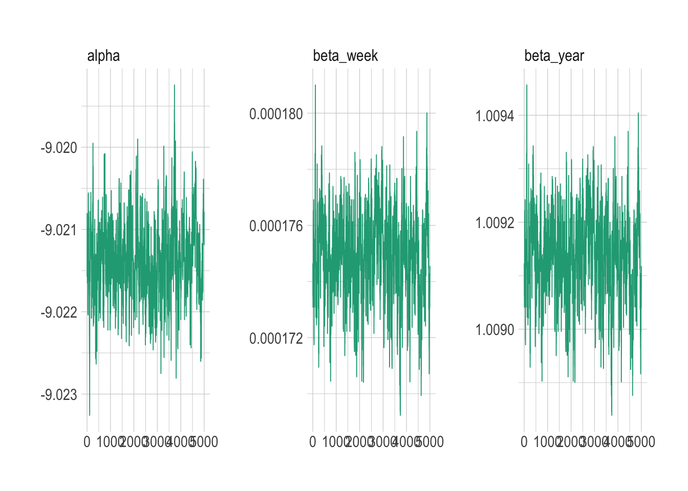
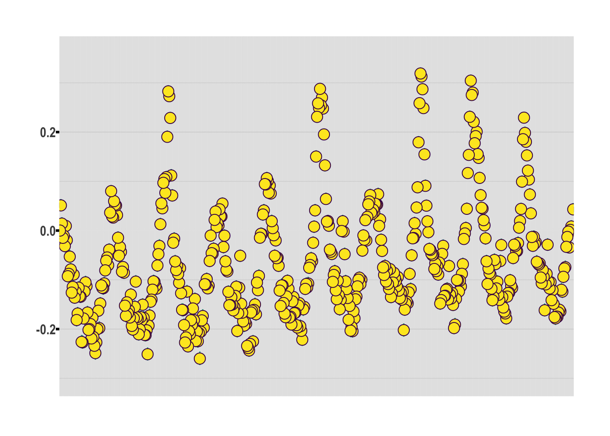
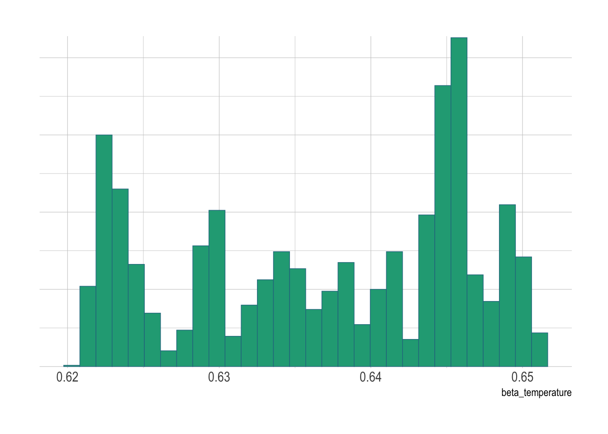

Bayesian Regression and Temporal modelling
SHARP Bayesian Modeling for Environmental Health Workshop
Goal of this computing lab session
This goal of this lab is to explore some key temporal modelling concepts, including linear slopes, random walks and inclusion of linear exposure terms.
What’s going to happen in this lab session?
During this lab session, we will:
- Explore some real time series mortality data;
- Apply a basic linear model;
- Apply a non-linear model;
- Incorporate basic temperature term into model;
- Modify temperature term to be month-specific; and
- Explore how well model convergence and fit performs.
Introduction
We will be using national death count data for Spain during 2010-2020, as taken from the published paper:
V. Kontis, J.E. Bennett, R.M. Parks, T. Rashid, J. Pearson-Stuttard, P. Asaria, B. Zhou, M. Guillot, C.D. Mathers, Y.H. Khang, M. McKee and M. Ezzati. Lessons learned and lessons missed: impact of the coronavirus disease 2019 (COVID-19) pandemic on all-cause mortality in 40 industrialised countries prior to mass vaccination. Wellcome Open Research 2021, 6:279
For that analysis, we applied an Bayesian methods to weekly mortality records in 40 industrialised countries around the world. We’re choosing Spain because it was one of the records which had a long time series of data, but it could have be another country. There’s no particular reason we used Spain other than that. But Spain it is!
We will examine Spain’s weekly death count during 2010-2019. We will build simple Bayesian models to try to understand what is happening in the data. Once again we will use NIMBLE as the basis for our Bayesian model writing.
Exploratory data analysis
Let’s load in the data.
data <- read_csv(here("data", "Spain", "data_spain.csv"))Rows: 8700 Columns: 21
── Column specification ────────────────────────────────────────────────────────
Delimiter: ","
chr (4): country, sex, age, week
dbl (9): week_id, week_of_year, month_of_year, t2m, weekly_t2m_anomaly, popu...
lgl (8): bank_holiday_early_may, bank_holiday_easter_monday, bank_holiday_go...
ℹ Use `spec()` to retrieve the full column specification for this data.
ℹ Specify the column types or set `show_col_types = FALSE` to quiet this message.head(data)# A tibble: 6 × 21
country sex age week week_id week_of_year month_of_year t2m
<chr> <chr> <chr> <chr> <dbl> <dbl> <dbl> <dbl>
1 spain both_sexes 0-44 04/01/2010 1 1 1 3.60
2 spain both_sexes 0-44 11/01/2010 2 2 1 5.32
3 spain both_sexes 0-44 18/01/2010 3 3 1 7.49
4 spain both_sexes 0-44 25/01/2010 4 4 1 4.24
5 spain both_sexes 0-44 01/02/2010 5 5 2 5.20
6 spain both_sexes 0-44 08/02/2010 6 6 2 3.28
# ℹ 13 more variables: weekly_t2m_anomaly <dbl>, population <dbl>,
# deaths <dbl>, bank_holiday_new_year <dbl>, bank_holiday_christmas <dbl>,
# bank_holiday_early_may <lgl>, bank_holiday_easter_monday <lgl>,
# bank_holiday_good_friday <lgl>, bank_holiday_spring <lgl>,
# bank_holiday_summer <lgl>, bank_holiday_battle_of_the_boyne <lgl>,
# bank_holiday_st_patricks_day <lgl>, bank_holiday_st_andrews_day <lgl>Now let’s summarise the data for Spain by week nationally
data_national <- data |>
group_by(week, week_of_year) |>
summarise(
deaths = sum(deaths),
population = sum(population),
t2m = mean(t2m),
weekly_t2m_anomaly = mean(weekly_t2m_anomaly)
) |>
mutate(week = dmy(week)) |>
arrange(week) |>
filter(year(week) < 2020) # avoiding COVID for now`summarise()` has grouped output by 'week'. You can override using the
`.groups` argument.What does the national data look like?
head(data_national)# A tibble: 6 × 6
# Groups: week [6]
week week_of_year deaths population t2m weekly_t2m_anomaly
<date> <dbl> <dbl> <dbl> <dbl> <dbl>
1 2010-01-04 1 35280 263311048 3.60 -1.28
2 2010-01-11 2 37162 263325210 5.32 0.832
3 2010-01-18 3 35808 263339364 7.49 2.02
4 2010-01-25 4 34790 263353516 4.24 -1.26
5 2010-02-01 5 34938 263367674 5.20 -0.964
6 2010-02-08 6 34210 263381826 3.28 -1.92 Let’s plot the number of national deaths in Spain by week during our time period (2010-2019)
ggplot(data = data_national) +
geom_point(aes(x = week, y = deaths))
Let’s calculate crude death rates (per 100,000) over time too. ::: aside Crude death rates are total deaths divided by total population, without age-adjustment or anything else. :::
data_national <- data_national |>
mutate(rate = 100000 * deaths / population)Let’s plot the crude death rates over time.
ggplot(data = data_national) +
geom_point(aes(x = week, y = rate)) +
ylab("crude death rates (per 100,000)")
Obtain month information from date.
data_national <- data_national |>
ungroup() |>
mutate(month = month(week))Let’s look at the data one more time now that we’ve done some more processing.
head(data_national)# A tibble: 6 × 8
week week_of_year deaths population t2m weekly_t2m_anomaly rate month
<date> <dbl> <dbl> <dbl> <dbl> <dbl> <dbl> <dbl>
1 2010-01-04 1 35280 263311048 3.60 -1.28 13.4 1
2 2010-01-11 2 37162 263325210 5.32 0.832 14.1 1
3 2010-01-18 3 35808 263339364 7.49 2.02 13.6 1
4 2010-01-25 4 34790 263353516 4.24 -1.26 13.2 1
5 2010-02-01 5 34938 263367674 5.20 -0.964 13.3 2
6 2010-02-08 6 34210 263381826 3.28 -1.92 13.0 2Linear model over time
The first model we will create and assess is a linear model over time, which assumes that (the log of) death rates are simply going up or down at a constant rate throughout our study.
This is very basic, but we would recommend always starting with basic models and working up from there.
Since we are dealing with count data, a Poisson model could make sense.
Priors: \[ \begin{split} \alpha &\sim N(0, 10), \\ \beta_w &\sim N(0, 10) \end{split} \]
Likelihood: \[ \begin{split} y_t &\sim \text{Pois}(\mu_t) \quad i = 1,..., T \\ \log(\mu_t) &= \log(P_t) + \alpha + \beta_w t \end{split} \]
Let’s write the NIMBLE code of the above formulation.
code_linear <- nimbleCode({
# priors
alpha ~ dnorm(0, sd = 10) # prior for alpha
beta_week ~ dnorm(0, sd = 10) # prior for beta_week
# likelihood
for (t in 1:Nw) {
deaths[t] ~ dpois(mu[t])
log(mu[t]) <- log(population[t]) + alpha + beta_week * t
}
# what's the estimated annual rate of change?
beta_year <- exp(52 * beta_week)
beta_year_exp <- exp(beta_year)
})Final preparation of data we need for NIMBLE model into lists.
constants <- list(Nw = nrow(data_national))
data <- list(deaths = data_national$deaths, population = data_national$population)Set initial values for MCMC samples
inits <- list(alpha = 0, beta_week = 0)
parameters_to_monitor <- c("alpha", "beta_week", "beta_year", "beta_year_exp")Let’s run the model.
tic <- Sys.time()
nimbleMCMC_samples_linear <- nimbleMCMC(
code = code_linear,
data = data,
constants = constants,
inits = inits,
monitors = parameters_to_monitor,
niter = 10000,
nburnin = 5000,
setSeed = 1,
samplesAsCodaMCMC = TRUE
)Defining modelBuilding modelSetting data and initial valuesRunning calculate on model
[Note] Any error reports that follow may simply reflect missing values in model variables.Checking model sizes and dimensionsChecking model calculationsCompiling
[Note] This may take a minute.
[Note] Use 'showCompilerOutput = TRUE' to see C++ compilation details.running chain 1...|-------------|-------------|-------------|-------------|
|-------------------------------------------------------|toc <- Sys.time()
toc - ticTime difference of 10.31081 secsWhat is the summary of each estimated parameter from the Poisson model?
summarise_draws(nimbleMCMC_samples_linear, default_summary_measures())# A tibble: 4 × 7
variable mean median sd mad q5 q95
<chr> <num> <num> <num> <num> <num> <num>
1 alpha -9.02 -9.02 0.000472 0.000451 -9.02 -9.02
2 beta_week 0.000175 0.000175 0.00000156 0.00000152 0.000172 0.000177
3 beta_year 1.01 1.01 0.0000819 0.0000796 1.01 1.01
4 beta_year_exp 2.74 2.74 0.000225 0.000218 2.74 2.74 And how good do convergence indicators look?
summarise_draws(nimbleMCMC_samples_linear, default_convergence_measures())# A tibble: 4 × 4
variable rhat ess_bulk ess_tail
<chr> <num> <num> <num>
1 alpha 1.00 179. 262.
2 beta_week 1.00 157. 318.
3 beta_year 1.00 157. 318.
4 beta_year_exp 1.00 157. 318.mcmc_trace(nimbleMCMC_samples_linear)
Let’s calculate the death rate from the model using the formula. For simplicity, we’ll use the mean of the samples generated from the model run above.
linear_fit <- data_national |>
mutate(
.death_rate_fit = 100000 * exp(
# add alpha and beta_week * week_number by sample
sweep(
nimbleMCMC_samples_linear[, "beta_week"] %*% t(1:nrow(data_national)),
1,
nimbleMCMC_samples_linear[, "alpha"],
FUN = "+"
)
) |>
# then take the mean of the samples
apply(
FUN = mean,
MARGIN = 2
)
) |>
mutate(residuals = rate - .death_rate_fit)Let’s plot how the model fits
linear_fit |>
ggplot() +
geom_point(aes(x = week, y = rate), size = 0.6) +
geom_line(aes(x = week, y = .death_rate_fit), size = 0.8, colour = "red")Warning: Using `size` aesthetic for lines was deprecated in ggplot2 3.4.0.
ℹ Please use `linewidth` instead.Now let’s look at the residuals of the fit, which, if the model fits well, should be randomly distributed around zero without any obvious pattern.
linear_fit |>
ggplot(aes(x = residuals)) +
geom_histogram()`stat_bin()` using `bins = 30`. Pick better value with `binwidth`.
The residuals don’t look normally distributed. There is very likely some more complexity we should add to the model.
Linear model over time with random walk term
The residuals look like there may be a pattern, and so let us attempt to remove that by including a weekly random walk, which you were introduced to in the lectures.
Let’s remove the slope for now so we can just look at the random walk.
Priors \[ \begin{split} \alpha &\sim N(0, 10), \\ \sigma_{rw} &\sim N^+(1) \end{split} \]
Likelihood \[ \begin{split} y_t &\sim \text{Pois}(\mu_t) \quad i = t,..., T \\ \log(\mu_t) &= \log(P_t) + \alpha + \gamma_t \\ \gamma_t &\sim N(\gamma_{t-1}, \sigma_{rw}) \end{split} \]
It was getting quite complicated to manipulate the samples after the model had fit to calculate the death rate. So let’s create a variable lograte[t] within the model and monitor that.
code_weekly_random_walk <- nimbleCode({
# priors
alpha ~ dnorm(0, sd = 10) # prior for alpha
sigma_rw ~ T(dnorm(0, 1), 0, Inf) # half-normal prior for variance of weekly effects
# likelihood
for (t in 1:Nw) {
deaths[t] ~ dpois(mu[t])
log(mu[t]) <- log(population[t]) + lograte[t]
lograte[t] <- alpha + rw[t]
}
# random walk over time
rw[1] <- 0
for (t in 2:Nw) {
rw[t] ~ dnorm(rw[t - 1], sigma_rw)
}
})Set initial values for MCMC samples
inits <- list(alpha = -8.0, rw = rep(0, times = nrow(data_national)), sigma_rw = 1)
parameters_to_monitor <- c("alpha", "rw", "lograte")Let’s run the model.
tic <- Sys.time()
nimbleMCMC_samples_week_random_walk <- nimbleMCMC(
code = code_weekly_random_walk,
data = data,
constants = constants,
inits = inits,
monitors = parameters_to_monitor,
niter = 10000, # 80000,
nburnin = 5000, # 40000,
setSeed = 1,
samplesAsCodaMCMC = TRUE
)Defining modelBuilding modelSetting data and initial valuesRunning calculate on model
[Note] Any error reports that follow may simply reflect missing values in model variables.Checking model sizes and dimensionsChecking model calculationsCompiling
[Note] This may take a minute.
[Note] Use 'showCompilerOutput = TRUE' to see C++ compilation details.running chain 1...|-------------|-------------|-------------|-------------|
|-------------------------------------------------------|toc <- Sys.time()
toc - ticTime difference of 12.28977 secsWhat is the summary of each estimated parameter from the model with the random walk over time included?
summarise_draws(nimbleMCMC_samples_week_random_walk, default_summary_measures())# A tibble: 1,045 × 7
variable mean median sd mad q5 q95
<chr> <num> <num> <num> <num> <num> <num>
1 alpha -8.91 -8.91 0.00358 0.00281 -8.92 -8.91
2 lograte[1] -8.91 -8.91 0.00358 0.00281 -8.92 -8.91
3 lograte[2] -8.87 -8.87 0.00536 0.00539 -8.87 -8.86
4 lograte[3] -8.90 -8.90 0.00532 0.00507 -8.91 -8.89
5 lograte[4] -8.93 -8.93 0.00531 0.00539 -8.94 -8.92
6 lograte[5] -8.93 -8.93 0.00542 0.00550 -8.94 -8.92
7 lograte[6] -8.95 -8.95 0.00548 0.00550 -8.96 -8.94
8 lograte[7] -8.91 -8.91 0.00528 0.00535 -8.92 -8.90
9 lograte[8] -8.94 -8.94 0.00537 0.00513 -8.95 -8.93
10 lograte[9] -9.01 -9.01 0.00550 0.00570 -9.02 -9.00
# ℹ 1,035 more rowsAnd how good do convergence indicators look?
summarise_draws(nimbleMCMC_samples_week_random_walk, default_convergence_measures())# A tibble: 1,045 × 4
variable rhat ess_bulk ess_tail
<chr> <num> <num> <num>
1 alpha 1.49 2.78 27.6
2 lograte[1] 1.49 2.78 27.6
3 lograte[2] 1.00 1208. 1407.
4 lograte[3] 1.00 1114. 1287.
5 lograte[4] 1.00 1370. 1441.
6 lograte[5] 1.00 911. 691.
7 lograte[6] 1.00 1183. 1080.
8 lograte[7] 1.00 1098. 1070.
9 lograte[8] 1.00 1086. 1258.
10 lograte[9] 1.00 1248. 1124.
# ℹ 1,035 more rowsThe rhat values indicate that convergence could be better if we ran for longer. This is a real-world example of trying to find better converging models with more samples. This is part of the Bayesian inference challenge.
Another possibility is that the model might not be very well specified.
So let’s run again with more samples!
tic <- Sys.time()
nimbleMCMC_samples_week_random_walk_more_samples <- nimbleMCMC(
code = code_weekly_random_walk,
data = data,
constants = constants,
inits = inits,
monitors = parameters_to_monitor,
niter = 20000, # 200000,
nburnin = 10000, # 100000,
setSeed = 1,
samplesAsCodaMCMC = TRUE
)Defining modelBuilding modelSetting data and initial valuesRunning calculate on model
[Note] Any error reports that follow may simply reflect missing values in model variables.Checking model sizes and dimensionsChecking model calculationsCompiling
[Note] This may take a minute.
[Note] Use 'showCompilerOutput = TRUE' to see C++ compilation details.running chain 1...|-------------|-------------|-------------|-------------|
|-------------------------------------------------------|toc <- Sys.time()
toc - ticTime difference of 14.41423 secsWhat is the summary of each estimated parameter from the model with the random walk over time included but with more samples?
summarise_draws(nimbleMCMC_samples_week_random_walk_more_samples, default_summary_measures())# A tibble: 1,045 × 7
variable mean median sd mad q5 q95
<chr> <num> <num> <num> <num> <num> <num>
1 alpha -8.91 -8.91 0.00429 0.00365 -8.92 -8.90
2 lograte[1] -8.91 -8.91 0.00429 0.00365 -8.92 -8.90
3 lograte[2] -8.87 -8.87 0.00512 0.00521 -8.87 -8.86
4 lograte[3] -8.90 -8.90 0.00531 0.00537 -8.91 -8.89
5 lograte[4] -8.93 -8.93 0.00537 0.00518 -8.94 -8.92
6 lograte[5] -8.93 -8.93 0.00514 0.00510 -8.94 -8.92
7 lograte[6] -8.95 -8.95 0.00535 0.00524 -8.96 -8.94
8 lograte[7] -8.91 -8.91 0.00536 0.00559 -8.92 -8.90
9 lograte[8] -8.94 -8.94 0.00529 0.00513 -8.95 -8.93
10 lograte[9] -9.01 -9.01 0.00570 0.00577 -9.02 -9.00
# ℹ 1,035 more rowsAnd how good do convergence indicators look?
summarise_draws(nimbleMCMC_samples_week_random_walk_more_samples, default_convergence_measures())# A tibble: 1,045 × 4
variable rhat ess_bulk ess_tail
<chr> <num> <num> <num>
1 alpha 1.28 2.80 20.5
2 lograte[1] 1.28 2.80 20.5
3 lograte[2] 1.00 2598. 2753.
4 lograte[3] 1.00 2425. 2597.
5 lograte[4] 1.00 2315. 2540.
6 lograte[5] 1.00 2489. 2919.
7 lograte[6] 1.00 2343. 2520.
8 lograte[7] 1.00 2306. 2651.
9 lograte[8] 1.00 2251. 2672.
10 lograte[9] 1.00 2208. 2193.
# ℹ 1,035 more rowsNow the rhat values are much nearer 1.00, which means that the samples are converging, and therefore the estimated parameters are reliable.
What do the random weekly terms looks like for the better converged model?
mcmc_intervals(
nimbleMCMC_samples_week_random_walk_more_samples[, str_c("rw[", seq(nrow(data_national)), "]")],
regex_pars = c("rw")
) +
coord_flip() +
theme(axis.text.x = element_blank())
Let’s calculate the death rate from the model using the formula. This should be easier now we’ve monitored lograte.
rw_fit <- data_national |>
mutate(
.death_rate_fit = 100000 * exp(
nimbleMCMC_samples_week_random_walk_more_samples[, str_c("lograte[", seq(nrow(data_national)), "]")]
) |>
apply(
FUN = mean,
MARGIN = 2
)
) |>
mutate(residuals = rate - .death_rate_fit)Let’s plot how the model fits
rw_fit |>
ggplot() +
geom_point(aes(x = week, y = rate), size = 2) +
geom_line(aes(x = week, y = .death_rate_fit), size = 0.8, colour = "red")Looks like it is a much better fit! We will talk later in the workshop about ways of quantifying which candidate models provide better fits
Now let’s look at the residuals of the fit, which, if the model fits well, should be randomly distributed around zero without any obvious pattern.
rw_fit |>
ggplot(aes(x = residuals)) +
geom_histogram()`stat_bin()` using `bins = 30`. Pick better value with `binwidth`.
The vast majority of the residuals are now very well normally distributed around 0, so we can likely say that the fit is much better!
Linear model over time with random walk term and overall linear temperature term
Let’s see what adding a slope for temperature does to try understand the role in predicting death rates, as per the formulation below (keeping out slope and keeping in random walk over time):
Priors \[ \begin{split} \alpha &\sim N(0, 10), \\ \beta_t &\sim N(0, 10), \\ \sigma_{rw} &\sim N^+(1) \end{split} \]
Likelihood \[ \begin{split} y_t &\sim \text{Pois}(\mu_t) \quad i = t,..., T \\ \log(\mu_t) &= \log(P_t) + \alpha + \beta_t \cdot \text{t2m} + \gamma_t \\ \gamma_t &\sim N(\gamma_{t-1}, \sigma_{rw}) \end{split} \]
code_weekly_random_walk_with_temperature <- nimbleCode({
# priors
alpha ~ dnorm(0, sd = 10) # prior for alpha
beta_temperature ~ dnorm(0, sd = 10) # prior for beta_temperature
sigma_rw ~ T(dnorm(0, 1), 0, Inf) # half-normal prior for variance of weekly effects
# likelihood
for (t in 1:Nw) {
deaths[t] ~ dpois(mu[t])
log(mu[t]) <- log(population[t]) + lograte[t]
lograte[t] <- alpha + beta_temperature * weekly_t2m_anomaly[t] + rw[t]
}
# random walk over time
rw[1] <- 0
for (t in 2:Nw) {
rw[t] ~ dnorm(rw[t - 1], sigma_rw)
}
})Final preparation of data into lists
constants <- list(Nw = nrow(data_national))
data <- list(
deaths = data_national$deaths,
population = data_national$population,
weekly_t2m_anomaly = round(data_national$weekly_t2m_anomaly, 1)
)Set initial values for MCMC samples
inits <- list(alpha = 0, beta_temperature = 0, rw = rep(0, times = nrow(data_national)), sigma_rw = 1)
parameters_to_monitor <- c("alpha", "beta_temperature", "rw", "lograte")Let’s run the model with the larger number of samples we empirically found was better at converging before
tic <- Sys.time()
nimbleMCMC_samples_week_random_walk_with_temperature <- nimbleMCMC(
code = code_weekly_random_walk_with_temperature,
data = data,
constants = constants,
inits = inits,
monitors = parameters_to_monitor,
niter = 20000, # 400000,
nburnin = 10000, # 200000,
setSeed = 1,
samplesAsCodaMCMC = TRUE
)Defining modelBuilding modelSetting data and initial valuesRunning calculate on model
[Note] Any error reports that follow may simply reflect missing values in model variables.Checking model sizes and dimensionsChecking model calculationsCompiling
[Note] This may take a minute.
[Note] Use 'showCompilerOutput = TRUE' to see C++ compilation details.running chain 1...|-------------|-------------|-------------|-------------|
|-------------------------------------------------------|toc <- Sys.time()
toc - ticTime difference of 21.10358 secsWhat is the summary of each estimated parameter from the model with the random walk over time and single linear temperature term?
summarise_draws(nimbleMCMC_samples_week_random_walk_with_temperature, default_summary_measures())# A tibble: 1,046 × 7
variable mean median sd mad q5 q95
<chr> <num> <num> <num> <num> <num> <num>
1 alpha -8.08 -8.08 0.0117 0.0134 -8.10 -8.06
2 beta_temperature 0.639 0.638 0.00736 0.00996 0.627 0.649
3 lograte[1] -8.91 -8.91 0.00350 0.00393 -8.91 -8.90
4 lograte[2] -8.87 -8.87 0.00513 0.00503 -8.87 -8.86
5 lograte[3] -8.90 -8.90 0.00505 0.00511 -8.91 -8.89
6 lograte[4] -8.93 -8.93 0.00544 0.00548 -8.94 -8.92
7 lograte[5] -8.93 -8.93 0.00549 0.00546 -8.94 -8.92
8 lograte[6] -8.95 -8.95 0.00538 0.00538 -8.96 -8.94
9 lograte[7] -8.91 -8.91 0.00538 0.00549 -8.92 -8.90
10 lograte[8] -8.94 -8.94 0.00541 0.00546 -8.95 -8.93
# ℹ 1,036 more rowsAnd how good do convergence indicators look?
summarise_draws(nimbleMCMC_samples_week_random_walk_with_temperature, default_convergence_measures())# A tibble: 1,046 × 4
variable rhat ess_bulk ess_tail
<chr> <num> <num> <num>
1 alpha 2.12 1.30 10.5
2 beta_temperature 2.11 1.30 11.7
3 lograte[1] 1.21 3.83 18.4
4 lograte[2] 1.00 2314. 2472.
5 lograte[3] 1.00 2661. 3165.
6 lograte[4] 1.00 2179. 2660.
7 lograte[5] 1.00 1939. 2243.
8 lograte[6] 1.00 2340. 2547.
9 lograte[7] 1.00 1938. 2189.
10 lograte[8] 1.00 2197. 2655.
# ℹ 1,036 more rowsLet’s calculate the death rate from the model using the formula. As before, for simplicity, we’ll use the mean of the samples generated from the model run above.
linear_temp_fit <- data_national |>
mutate(
.death_rate_fit = 100000 * exp(
nimbleMCMC_samples_week_random_walk_with_temperature[, str_c("lograte[", seq(nrow(data_national)), "]")]
) |>
apply(
FUN = mean,
MARGIN = 2
)
) |>
mutate(residuals = rate - .death_rate_fit)Let’s plot how the model fits
linear_temp_fit |>
ggplot() +
geom_point(aes(x = week, y = rate), size = 2) +
geom_point(aes(x = week, y = .death_rate_fit), size = 0.8, colour = "red")Now let’s look at the residuals of the fit, which, if the model fits well, should be randomly distributed around zero without any obvious pattern.
linear_temp_fit |>
ggplot(aes(x = residuals)) +
geom_histogram()`stat_bin()` using `bins = 30`. Pick better value with `binwidth`.
What does the posterior of the temperature term itself look like?
mcmc_hist(nimbleMCMC_samples_week_random_walk_with_temperature[, c("beta_temperature", "alpha")], pars = c("beta_temperature"))`stat_bin()` using `bins = 30`. Pick better value with `binwidth`.
What proportion of draws are greater than 0, which represents the posterior probability that the association between temperature and death rates is positive?
100 * sum(nimbleMCMC_samples_week_random_walk_with_temperature[, "beta_temperature"] > 0) / length(nimbleMCMC_samples_week_random_walk_with_temperature[, "beta_temperature"])[1] 100Linear model over time with random walk term and monthly random linear temperature term
Let’s see what adding a slope for temperature by month does to try understand the role in predicting death rates, as per the formulation below (keeping out overall linear slope and keeping in random walk over time):
Let’s see what adding a slope for temperature does by each month
Priors \[ \begin{split} \alpha &\sim N(0, 10), \\ \sigma_{rw} &\sim N^+(1), \\ \sigma_{t} &\sim N^+(1) \end{split} \]
Likelihood \[ \begin{split} y_t &\sim \text{Pois}(\mu_t) \quad i = t,..., T \\ \log(\mu_t) &= \log(P_t) + \alpha + \gamma_t + \beta_{m[t]} \cdot \text{t2m} \\ \gamma_t &\sim N(\gamma_{t-1}, \sigma_{rw}) \\ \beta_m &\sim N(\beta_{m-1}, \sigma_{t}) \end{split} \]
code_weekly_random_walk_with_temperature_by_month <- nimbleCode({
# priors
alpha ~ dnorm(0, sd = 10) # prior for alpha (Gary: make -inf +inf )
sigma_rw ~ dunif(0, 10) # prior for variance of random walk over time
sigma_temperature ~ dunif(0, 10) # prior for variance of temperature effects
# likelihood
for (t in 1:Nw) {
deaths[t] ~ dpois(mu[t])
log(mu[t]) <- log(population[t]) + lograte[t]
lograte[t] <- alpha + rw[t] + beta_temperature_month[month[t]] * weekly_t2m_anomaly[t]
}
# random walk over time
rw[1] <- 0
for (t in 2:Nw) {
rw[t] ~ dnorm(rw[t - 1], sigma_rw)
}
# monthly temperature random effect
beta_temperature_month[1] <- 0
for (m in 2:n_months) {
beta_temperature_month[m] ~ dnorm(0, sigma_temperature)
}
})Final preparation of data into lists
constants <- list(
Nw = nrow(data_national),
n_months = max(data_national$month),
month = data_national$month
)
data <- list(
deaths = data_national$deaths,
population = data_national$population,
weekly_t2m_anomaly = round(data_national$weekly_t2m_anomaly, 1)
)Set initial values for MCMC samples
inits <- list(
alpha = 0,
rw = rep(0, times = nrow(data_national)),
beta_temperature_month = rep(0, times = max(data_national$month)),
sigma_rw = 1,
sigma_temperature = 1
)
parameters_to_monitor <- c("alpha", "beta_temperature_month", "rw", "lograte")Let’s run the model.
tic <- Sys.time()
nimbleMCMC_samples_week_random_walk_with_temperature_by_month <- nimbleMCMC(
code = code_weekly_random_walk_with_temperature_by_month,
data = data,
constants = constants,
inits = inits,
monitors = parameters_to_monitor,
niter = 20000, # 800000,
nburnin = 10000, # 300000,
setSeed = 1,
samplesAsCodaMCMC = TRUE
)Defining modelBuilding modelSetting data and initial valuesRunning calculate on model
[Note] Any error reports that follow may simply reflect missing values in model variables.Checking model sizes and dimensionsChecking model calculationsCompiling
[Note] This may take a minute.
[Note] Use 'showCompilerOutput = TRUE' to see C++ compilation details.running chain 1...|-------------|-------------|-------------|-------------|
|-------------------------------------------------------|toc <- Sys.time()
toc - ticTime difference of 20.72477 secsWhat is the summary of each estimated parameter from the model with the random walk over time and month-specific linear temperature term?
summarise_draws(nimbleMCMC_samples_week_random_walk_with_temperature_by_month, default_summary_measures())# A tibble: 1,057 × 7
variable mean median sd mad q5 q95
<chr> <num> <num> <num> <num> <num> <num>
1 alpha -8.92 -8.92 0.00437 0.00448 -8.92e+0 -8.91
2 beta_temperature_month[1] 0 0 0 0 0 0
3 beta_temperature_month[2] -0.119 -0.117 0.0295 0.0374 -1.63e-1 -0.0671
4 beta_temperature_month[3] -0.00398 -0.00121 0.0219 0.0307 -3.57e-2 0.0263
5 beta_temperature_month[4] -0.000218 0.00820 0.0215 0.0148 -4.34e-2 0.0231
6 beta_temperature_month[5] 0.0263 0.0265 0.00538 0.00503 1.72e-2 0.0365
7 beta_temperature_month[6] 0.0563 0.0534 0.0164 0.0245 2.96e-2 0.0788
8 beta_temperature_month[7] 0.0347 0.0289 0.0213 0.0190 8.15e-3 0.0823
9 beta_temperature_month[8] 0.0428 0.0456 0.0242 0.0219 -7.45e-4 0.0814
10 beta_temperature_month[9] -0.00760 -0.0130 0.0201 0.0156 -3.07e-2 0.0336
# ℹ 1,047 more rowsAnd how good do convergence indicators look?
summarise_draws(nimbleMCMC_samples_week_random_walk_with_temperature_by_month, default_convergence_measures())# A tibble: 1,057 × 4
variable rhat ess_bulk ess_tail
<chr> <num> <num> <num>
1 alpha 1.07 8.86 11.9
2 beta_temperature_month[1] NA NA NA
3 beta_temperature_month[2] 2.12 1.30 10.6
4 beta_temperature_month[3] 2.12 1.38 18.8
5 beta_temperature_month[4] 1.53 1.83 10.5
6 beta_temperature_month[5] 1.09 17.9 11.3
7 beta_temperature_month[6] 2.06 1.37 11.2
8 beta_temperature_month[7] 1.93 1.40 15.2
9 beta_temperature_month[8] 1.32 2.87 17.8
10 beta_temperature_month[9] 1.20 3.68 14.5
# ℹ 1,047 more rowsLet’s calculate the death rate from the model using the formula. Again, as before, for simplicity, we’ll use the mean of the samples generated from the model run above.
linear_month_temp_fit <- data_national |>
mutate(
.death_rate_fit = 100000 * exp(
nimbleMCMC_samples_week_random_walk_with_temperature[, str_c("lograte[", seq(nrow(data_national)), "]")]
) |>
apply(
FUN = mean,
MARGIN = 2
)
) |>
mutate(residuals = rate - .death_rate_fit)Let’s plot how the model fits
linear_month_temp_fit |>
ggplot() +
geom_point(aes(x = week, y = rate), size = 2) +
geom_point(aes(x = week, y = .death_rate_fit), size = 0.8, colour = "red")Now let’s look at the residuals of the fit, which, if the model fits well, should be randomly distributed around zero without any obvious pattern.
linear_month_temp_fit |>
ggplot(aes(x = residuals)) +
geom_histogram()`stat_bin()` using `bins = 30`. Pick better value with `binwidth`.
What does the summary of the monthly temperature terms look like?
mcmc_intervals(nimbleMCMC_samples_week_random_walk_with_temperature_by_month, regex_pars = c("beta_temperature")) + coord_flip()Closing remarks
In this lab session, we have explored how to fit some increasingly sophisticated time series models using Bayesian regression in NIMBLE. We looked at models which started off with a linear time trend, then a random walk, then including a few kinds of temperature terms.
Other topics that will be related to this will be how to include a more general longer-memory autoregressive term, and also how to forecast based on model fit. However, in the limited time that we have, this lab provides a foundation for learning about other methods and techniques, some of which will be elaborated upon in the coming lab sessions.